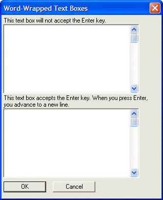

Multi-line and Word-wrapped Text Boxes
To create a multi-line, word-wrapped text box control, you use the %M% format option. To create a multi-line, word-wrapped text box control that accepts the Enter key, use the %MW% formatting option. If you do not use the 'W' in the formatting string, the Enter key will select the default button on the dialog.
The following dialog displays multi-line, word-wrapped text boxes, one of which accepts the Enter key to move to a new line.
result=ui_dlg_box("Word-Wrapped Text Boxes",<<%dlg% {region} {wrap=60} This text box will not accept the Enter key.; [%W%.52,10text1]; This text box accepts the Enter key. When you press Enter, you advance to a new line.; [%MW%.52,10text2]; {endregion}; {region} <*15&OK> <15&Cancel> {endregion} %dlg% ) |
This script produces this dialog:

Lesson 5: Multi-Line Word-Wrapped Text Box
Next
See Also
Text Box Syntax, Text Box M Directive, Text Box W Directive
Limitations
Desktop applications only